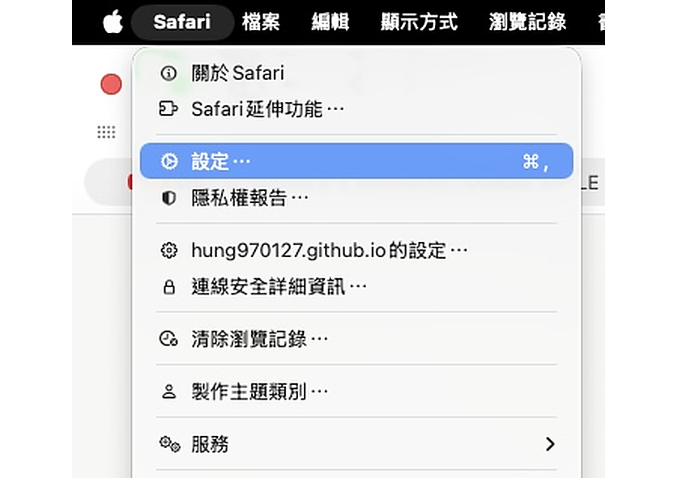
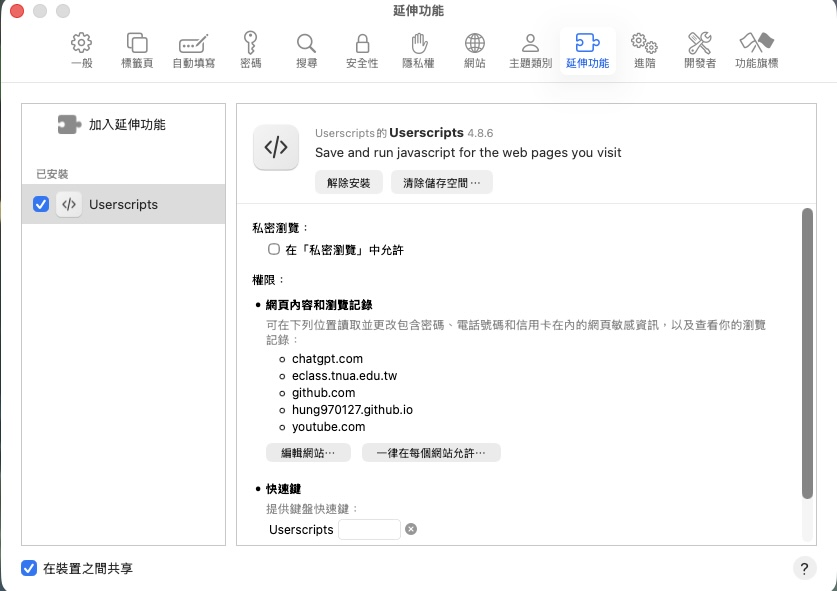

TNUA Hub
使用教學
第一次使用時，依照以下步驟設定即可。
② 開啟 Safari 擴充功能
安裝完成後，回到 Safari， 開啟 Userscripts 擴充功能。 如果 Safari 詢問是否允許它在網站上運作，請允許。
Mac：Safari → 設定 → 擴充功能 → Userscripts → 開啟


③ 一鍵安裝 TNUA 同步工具
確認已開啟 Userscripts 後， 按下方按鈕即可安裝 TNUA Homework List 的同步工具。
一鍵安裝同步工具
按下按鈕後，Userscripts 會顯示安裝提示。
安裝完成後回到首頁，執行一次同步即可。